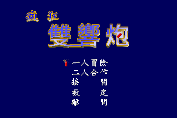
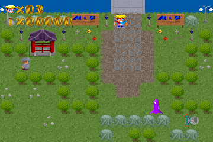

名稱：瘋狂雙響炮 (中文版) 簡介：亞博克1993年出品的動作遊戲，由漢堂代理發行 [待補]。   保護：磁片（安裝時）+安裝所在系統資訊保護，破解碼（無視所在系統）： CRAZY.EXE 75 4C A4 B0 97 00 -- 26 -- AA 50 -- 備註：執行CRAZY /R可重設音效卡，設定完後會回寫進CRAZY.EXE裡。 備註：音效卡建議選SOUND BLASTER (FM)，問題會比較少。

